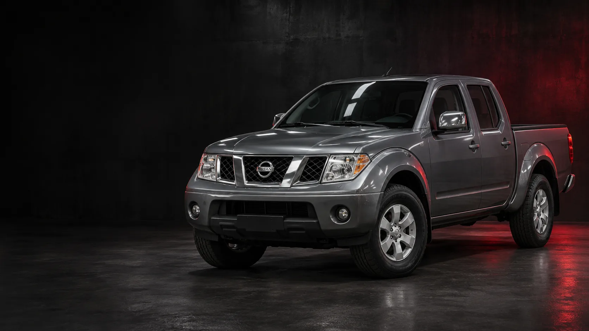

No blog RochaPro
MESMO NOME.
OUTRA GERAÇÃO.
Frontier: conheça a aplicação da sua.

NO CATÁLOGO · KIT10242
A geração faz diferença.
Confira o ano e o conjunto do veículo.
 NO CATÁLOGO · KIT10242NO CATÁLOGO · KIT10242
NO CATÁLOGO · KIT10242NO CATÁLOGO · KIT10242